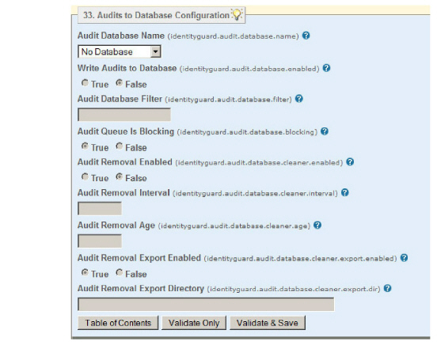

|
IdentityGuard Server 11.0 Administration Guide |
|
IdentityGuard Server 11.0 Administration Guide |
If you are planning to write your Entrust IdentityGuard audits to a database, you can use an existing database or you can set up a new one. You cannot use an LDAP repository for storing Entrust IdentityGuard audits.
To set up a new database, follow the instructions in Configuring a database.
To enable the writing of audits to the database, and to choose the database to use, complete the following procedure.
To configure writing audits to a database
1. Start the Entrust IdentityGuard Properties Editor. (See Logging in and out of the Properties Editor.)
2. On the Table of Contents, click Audits to Database Configuration.

3. If there is more than one database configured, select from the list under Audit Database Name.
4. Under Write Audits to Database, select True.
5. If you want to restrict the audits written to the database, in Audits Database Filter, enter the filter expression. Filtering is done by the audit number. For example, here are some valid audit database filters:
-100 (all audit codes <= 100)
200-300 (all codes between 200 and 300)
1000- (all audit codes >= 1000)
-100, 200-300,1000- (all audit codes <= 100, between 200 and 300 inclusive, or >= 1000)
Note: The “AUD” audit code prefix cannot be used in the filter list.
6. Optional. Set the Audit Queue Is Blocking setting. Entrust IdentityGuard maintains a queue of audits waiting to be written to the database. You can change the behavior of this queue through the Audit Queue Is Blocking setting.
● If True, requests to Entrust IdentityGuard are blocked until space becomes available in the audit queue.
● If False, the oldest audit in the queue is removed when the queue is full. This frees up space in the queue, ensuring that requests are not blocked.
The default is True.
7. Optional. To enable automatic removal of old audits from the database, select True under Audit Removal Enabled. This option must be enabled for any other Audit Removal parameters to take effect.
8. Optional. Enter the Audit Removal Age. This is the age, in days, of old audits to be deleted. If you do not specify an Audit Removal Age, the default value of 180 days (approximately 6 months) is used.
9. Optional. Enter the Audit Removal Interval. This is the interval, in hours, between checks for old audit records to delete. If Audit Removal is enabled, and you do not specify an Audit Removal Interval, the default value of 24 hours is used.
10. Optional. Set Audit Removal Export Enabled to True to send deleted audits to an export file.
11. Optional. Enter the directory path in Audit Removal Export Directory. This directory is only used if Audit Removal Export Enabled is set to True. If you do not specify a path, exported audit files are written to <$IG_HOME>/export/audits.
Note: If you enter an invalid path for the Audit Removal Export Directory, the default location is used.
12. Click Validate & Save.
13. Restart the Entrust IdentityGuard services to have the changes take effect.